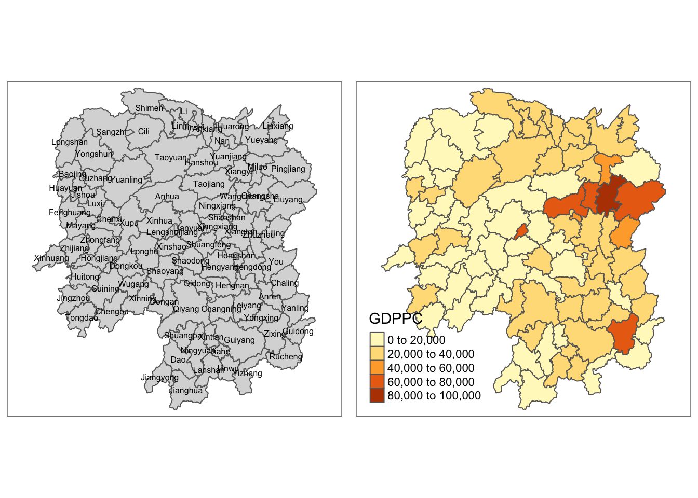
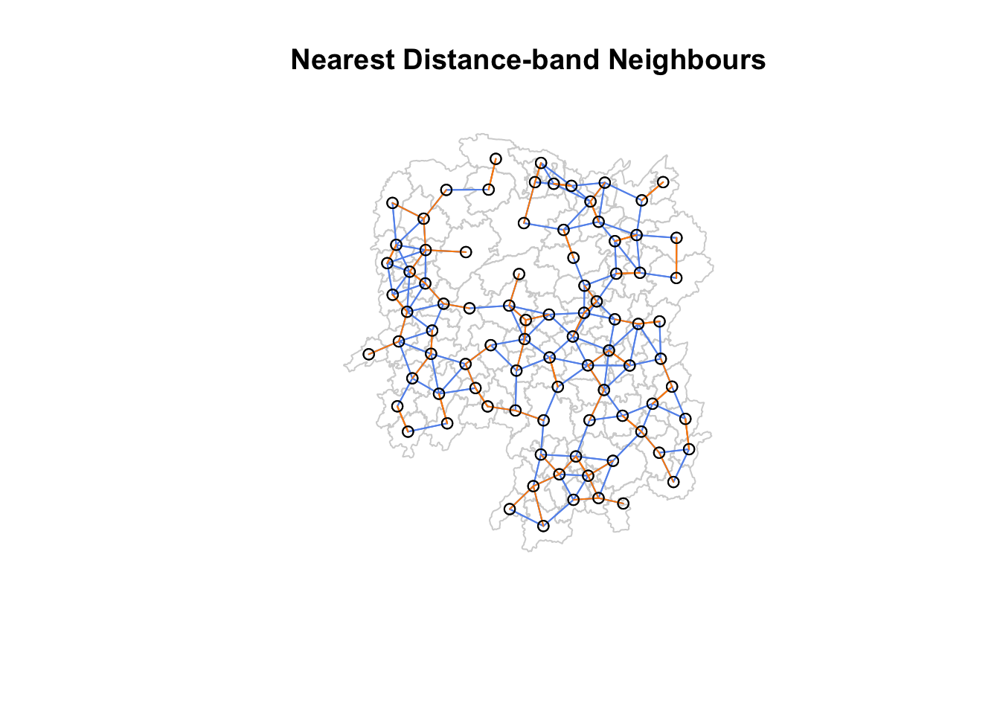
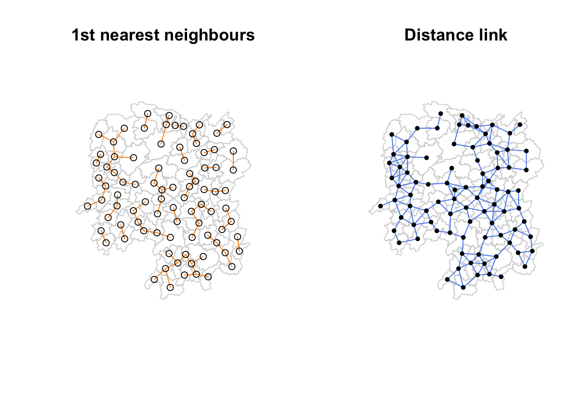

pacman::p_load(sf, spdep, tmap, tidyverse, knitr)2a Spatial Weights and Application
1.1 Overview
Spatial weights are a fundamental concept in spatial analysis and spatial statistics. They are used to quantify the spatial relationships between geographic locations in a dataset. Spatial weights capture the relation of one location is to another based on their spatial proximity.
There are two types of spatial weights:
Contiguity-based weights define relationships based on common geographic boundary.

Distance-based weights assign weights based on the Euclidean or other distance measures between locations. Locations closer to each other receive higher weights.

Learning Objectives:
- xx
- xx
1.2 Load packages
**New package**
`spdep` is comprehensive package for spatial econometrics and spatial
statistics. It provides the functions and tools for handling spatial
data, creating spatial weights matrices, and conducting spatial data
analysis.spdep offers various methods to create spatial weights matrices based on contiguity, distance, and other spatial relationships. Binary or weighted spatial weights matrices are created using functions such as poly2nb (polygon-based contiguity), dnearneigh (distance-based neighbors), and others.
spdep provides functions to calculate measures of spatial autocorrelation, including global Moran’s I, Geary’s C, and Getis/Ord G statistics.
spdep supports various types of spatial regression models, including spatial autoregressive (SAR) models, spatial error models, spatial lag models, and generalized spatial two-stage least squares (GMM-SAR) models.
spdep has functions for spatial filtering, such as Moran eigenvector spatial filtering (MESF) and generalized Moran eigenvector spatial filtering (GMESF), which can be used for spatial smoothing and noise reduction.
sdpep allows for regional aggregation using minimum spanning tree-based methods.
1.3 Import data
hunan output indicates that the geospatial objects are polygon features. There are 88 features and 7 fields. It is in WGS84 projected coordinates system with XY dimension.
hunan = st_read(dsn="data/geospatial", layer="Hunan")Reading layer `Hunan' from data source
`/Users/chockwankee/Documents/chockwk/ISSS624_Geospatial_Analytics/Hands_on_Ex/Hands_on_Ex02/data/geospatial'
using driver `ESRI Shapefile'
Simple feature collection with 88 features and 7 fields
Geometry type: POLYGON
Dimension: XY
Bounding box: xmin: 108.7831 ymin: 24.6342 xmax: 114.2544 ymax: 30.12812
Geodetic CRS: WGS 84hunan2012 output indicates 88 features, and 29 fields.
hunan2012 = read_csv("data/aspatial/Hunan_2012.csv")left_join() will merge the selected columns of hunan and hunan2012.
hunan_hunan2012 = left_join(hunan, hunan2012) %>%
select(1:4, 7, 15)
head(hunan_hunan2012, n=5)Simple feature collection with 5 features and 6 fields
Geometry type: POLYGON
Dimension: XY
Bounding box: xmin: 111.2145 ymin: 28.61762 xmax: 112.3013 ymax: 29.95847
Geodetic CRS: WGS 84
NAME_2 ID_3 NAME_3 ENGTYPE_3 County GDPPC
1 Changde 21098 Anxiang County Anxiang 23667
2 Changde 21100 Hanshou County Hanshou 20981
3 Changde 21101 Jinshi County City Jinshi 34592
4 Changde 21102 Li County Li 24473
5 Changde 21103 Linli County Linli 25554
geometry
1 POLYGON ((112.0625 29.75523...
2 POLYGON ((112.2288 29.11684...
3 POLYGON ((111.8927 29.6013,...
4 POLYGON ((111.3731 29.94649...
5 POLYGON ((111.6324 29.76288...1.4 Explore data
1.5 Plot data
GDPPC is the gross domestic product per capita shows a country’s GDP divided by its total population. We will visualise the regional development indicator by plotting a basemap nad a choropleth map with the distribution of GDPPC using qtm().
qtm() draws a quick thematic map without arguments or with a search term.
basemap <- tm_shape(hunan_hunan2012) +
tm_polygons() +
tm_text("NAME_3", size=0.5)
gdppc <- qtm(hunan_hunan2012, "GDPPC")
tmap_arrange(basemap, gdppc, asp=1, ncol=2)
1.6 Compute and Visualise Contiguity Spatial Weights
poly2nb() builds a neighbours list based on regions with contiguous boundaries, that is sharing one or more boundary point.

Compute Queen contiguity weight matrix:
wm_q = poly2nb(hunan_hunan2012, queen = TRUE)
summary(wm_q)Neighbour list object:
Number of regions: 88
Number of nonzero links: 448
Percentage nonzero weights: 5.785124
Average number of links: 5.090909
Link number distribution:
1 2 3 4 5 6 7 8 9 11
2 2 12 16 24 14 11 4 2 1
2 least connected regions:
30 65 with 1 link
1 most connected region:
85 with 11 linksThe output shows that there are 88 regions in Hunan where the most connected region has 11 neighbours and the two least connected regions have 1 neighbour. The average number of neighbours of the regions is 5.
List the neighbours of the specified polygon in the object:
wm_q[[85]] [1] 1 2 3 5 6 32 56 57 69 75 78Compute Rook contiguity weight matrix:
wm_r <- poly2nb(hunan_hunan2012, queen=FALSE)
summary(wm_r)Neighbour list object:
Number of regions: 88
Number of nonzero links: 440
Percentage nonzero weights: 5.681818
Average number of links: 5
Link number distribution:
1 2 3 4 5 6 7 8 9 10
2 2 12 20 21 14 11 3 2 1
2 least connected regions:
30 65 with 1 link
1 most connected region:
85 with 10 linksThe output shows that there are 88 regions in Hunan where the most connected region has 10 neighbours and the two least connected regions have 1 neighbour. The average number of neighbours of the regions is 5.
A connectivity map represents the relationships between geographic units or locations based on spatial proximity or adjacency. It provides a visual representation of how different regions or areas are connected to one another.
map_dbl() outputs double vectors, which have numbers that can have decimals. The mapping function applies a given function to each element of a vector and returns a vector of the same length.
st_centroid() is used to extract the centroid coordinates of each polygon feature and returns a point geometry. Note that the centroid is not always inside of the polygon that it is the center of, for example, a “C-shaped” island or a doughnut. st_point_on_surface() provides an alternative in which a point within the polygon will be returned.
Step 1: Map the geometry column to obtain the longitude and latitude columns. Note longitude is the first value in each centroid and latitude is the second value.
longitude = map_dbl(hunan_hunan2012$geometry, ~st_centroid(.x)[[1]])
latitude = map_dbl(hunan_hunan2012$geometry, ~st_centroid(.x)[[2]])Step 2: Bind longitude and latitude into the same object to create coords.
cbind() merge two data frames, given that the number of rows in both the data frames are equal. cbind() can append vectors, matrices, or any data frame by columns.
coords <- cbind(longitude, latitude)
head(coords) longitude latitude
[1,] 112.1531 29.44362
[2,] 112.0372 28.86489
[3,] 111.8917 29.47107
[4,] 111.7031 29.74499
[5,] 111.6138 29.49258
[6,] 111.0341 29.79863Plot Queen and Rook contiguity based on neighbours map.
par(mfrow=c(1,2))
plot(hunan$geometry, main="Queen Contiguity", border="lightgrey")
plot(wm_q, coords, pch = 19, cex = 0.6, add = TRUE, col= "deeppink", main="Queen Contiguity")
plot(hunan$geometry, main="Rook Contiguity", border="lightgrey")
plot(wm_r, coords, pch = 19, cex = 0.6, add = TRUE, col = "purple", main="Rook Contiguity")2.7 Compute Distance-band neighbours
Step 1: Determine the cut-off distance
knn2nb() converts a knn object returned by knearneigh into a neighbours list of class nb with a list of integer vectors containing neighbour region number ids.
dnearneigh() identifies neighbours of region points by Euclidean distance in the metric of the points between lower and upper bounds. If unprojected coordinates are used and either specified in the coordinates object x or with x as a two column matrix and longlat=TRUE, great circle distances in km will be calculated assuming the WGS84 reference ellipsoid.
nbdists() returns the Euclidean distances along the links in a list of the same form as the neighbours list. If longlat = TRUE, Great Circle distances are used.
k1 <- knn2nb(knearneigh(coords))
k1dists <- unlist(nbdists(k1, coords, longlat = TRUE))
summary(k1dists) Min. 1st Qu. Median Mean 3rd Qu. Max.
24.79 32.57 38.01 39.07 44.52 61.79 The output shows that the largest first nearest neighbour distance is 61.79 km, this value as the upper threshold ensures that all objects will have at least one neighbour.
Step 2: Compute fixed distance weight matrix
wm_d62 <- dnearneigh(coords, 0, 62, longlat = TRUE)
wm_d62Neighbour list object:
Number of regions: 88
Number of nonzero links: 324
Percentage nonzero weights: 4.183884
Average number of links: 3.681818 The output indicates there are 88 coords and the average number of neighbours is 3.68.
Step 3: Plot fixed distance weight matrix
‘k1’ indicated in orange lines show the links of 1st nearest neighbours and ‘wm_d62’ in blue lines show the links of neighbours within the cut-off distance of 62km.
plot(hunan_hunan2012$geometry, main="Nearest Distance-band Neighbours", border="lightgrey")
plot(wm_d62, coords, add=TRUE, col="cornflowerblue")
plot(k1, coords, add=TRUE, col="darkorange", length=0.08)
par(mfrow=c(1,2))
plot(hunan_hunan2012$geometry, main="1st nearest neighbours", border="lightgrey")
plot(k1, coords, add=TRUE, col="darkorange", length=0.08)
plot(hunan_hunan2012$geometry, main="Distance link", border="lightgrey")
plot(wm_d62, coords, add=TRUE, col="cornflowerblue", pch = 19, cex = 0.6)
Step 4: Compute adaptive distance weight matrix
One of the characteristics of fixed distance weight matrix is that more densely populated areas tend to have more neighbours than the less dense areas. We can use k-nearest neighbours to restrict the number of neighbours.
knn8 <- knn2nb(knearneigh(coords, k=8))
knn8Neighbour list object:
Number of regions: 88
Number of nonzero links: 704
Percentage nonzero weights: 9.090909
Average number of links: 8
Non-symmetric neighbours listThe output indicates there are 88 coords and the average number of neighbours is 8.
plot(hunan_hunan2012$geometry, main="Adaptive distance weight matrix", border="lightgrey")
plot(knn8, coords, pch = 19, cex = 0.6, add = TRUE, col = "darksalmon")
2.8 Inverse distance weighted interpolation
nbdists() is a function returns the Euclidean distances along the links in a list of the same form as the neighbours list. If longlat = TRUE, Great Circle distances are used.
Step 1: Compute the distance between areas.
dist <- nbdists(wm_q, coords, longlat = TRUE)
ids <- lapply(dist, function(x) 1/(x))Step 2: Assign weights to each neighbouring polygon
Each neighboring polygon will be assigned equal weight (style=“W”). The zero.policy=TRUE option allows for lists of non-neighbors.
nb2listw() function supplements a neighbours list with spatial weights for the chosen coding scheme.
rswm_q <- nb2listw(wm_q, style="W", zero.policy = TRUE)
rswm_qCharacteristics of weights list object:
Neighbour list object:
Number of regions: 88
Number of nonzero links: 448
Percentage nonzero weights: 5.785124
Average number of links: 5.090909
Weights style: W
Weights constants summary:
n nn S0 S1 S2
W 88 7744 88 37.86334 365.9147The output shows that n=88 and nn=7744. The weights are assigned equally based on the number of neighbours.
To view the weight of a specific polygon:
rswm_q$weights[1][[1]]
[1] 0.2 0.2 0.2 0.2 0.2The output shows that object 1 has 5 neighbours with weight 0.2 assigned to each neighbour.
rswm_ids <- nb2listw(wm_q, glist=ids, style="B", zero.policy=TRUE)
rswm_idsCharacteristics of weights list object:
Neighbour list object:
Number of regions: 88
Number of nonzero links: 448
Percentage nonzero weights: 5.785124
Average number of links: 5.090909
Weights style: B
Weights constants summary:
n nn S0 S1 S2
B 88 7744 8.786867 0.3776535 3.8137rswm_ids$weights[1][[1]]
[1] 0.01535405 0.03916350 0.01820896 0.02807922 0.011451132.9 Application of Spatial Weight Matrix
There are four types of spatial lagged variables:
- Spatial lag with row-standardized weights,
- Spatial lag as a sum of neighbouring values,
- Spatial window average, and
- Spatial window sum.